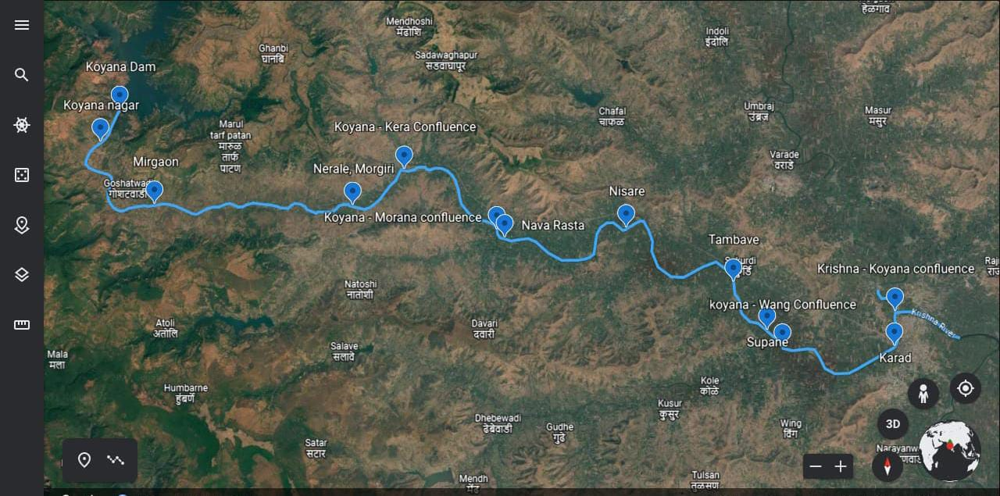
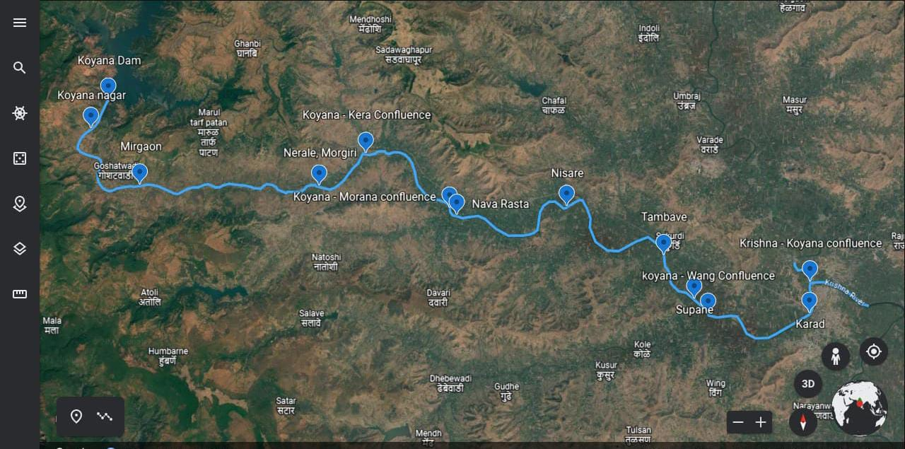

I have conducted extensive fieldwork as part of academic research and professional projects, involving environmental data collection, hydrological sampling, geomorphological observations, and validation of satellite-derived outputs.
B.Tech Project Fieldwork – Water Quality Assessment
As part of my B.Tech project on water quality analysis of the Lower Koyana Basin, I carried out systematic field surveys focused on in-situ data collection and laboratory-based water quality assessment.
- Collected surface water samples from 11 sampling locations along the river stretch
- Conducted monthly sampling over three months to capture temporal variability
- Followed standard field and laboratory protocols for physico-chemical analysis
- Integrated field and lab results with GIS-based spatial analysis
Field Photographs
 

Water sample collection during B.Tech field surveys in the Lower Koyana Basin.
Fieldwork as Junior Research Fellow – IISc Bengaluru
During my tenure as a Junior Research Fellow at the Indian Institute of Science (IISc), Bengaluru, I participated in multidisciplinary field campaigns supporting river basin management and environmental studies.
- Collected river sand and sediment samples for geomorphological analysis
- Collected surface and subsurface water samples for hydrological studies
- Participated in bioassessment surveys for river health evaluation
- Conducted floodplain validation surveys for satellite-derived inundation maps
- Documented field observations using GPS, photographs, and structured field notes
Field Photographs
Field-based bioassessment and floodplain validation during IISc research work.